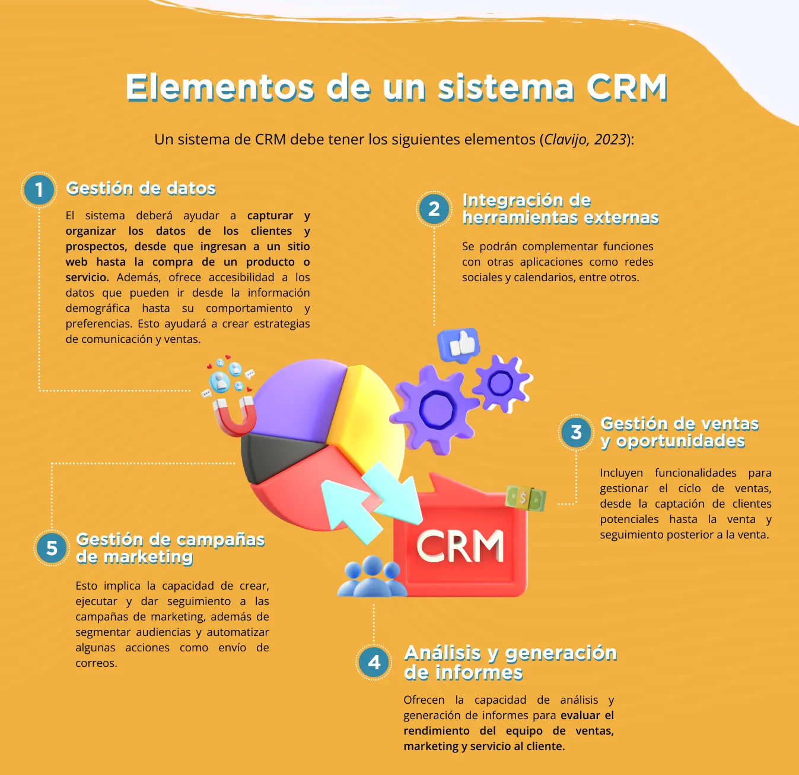

La gestión de clientes en una pequeña y mediana empresa (pyme) es fundamental para asegurar su crecimiento y sostenibilidad en el tiempo. Este proceso no solo implica conocer quiénes son los clientes y qué compran, sino también comprender profundamente sus necesidades, expectativas y comportamientos.
Por la trascendencia de esta actividad, en este apartado se analizarán los fundamentos del marketing relacional y las implicaciones que tiene en el crecimiento y éxito de un negocio. Presentamos cómo gestionar de manera efectiva la relación con los clientes, brindando una experiencia personalizada y satisfactoria que fomente la lealtad y la repetición de compras.
La primera parte profundiza en el concepto del marketing relacional, comprendiendo su importancia en la construcción de relaciones sólidas y duraderas con los clientes. Se analiza cómo la comprensión de las necesidades individuales puede marcar la diferencia en la percepción del valor de la oferta de la empresa y apreciación por parte de los clientes.
La segunda parte se enfoca en la gestión de la relación con los clientes, explorando cómo implementar estrategias de marketing relacional a través de herramientas digitales para crear una experiencia única y personalizada, así como el uso de un sistema de relación con el cliente (Customer Relationship Management – CRM).
La gestión y el seguimiento del cliente permiten que las empresas generen una buena imagen. De esta forma, deja en evidencia la importancia que se le da a los consumidores, teniendo una buena atención, calidad en el servicio y agilidad en los procesos de ventas. Esto influye directamente en la capacidad de captación de clientes, así como en los ingresos potenciales a generar.
Saber gestionar la cartera de clientes permite personalizar la oferta de productos y servicios, tomar decisiones informadas basadas en datos, identificar oportunidades de mercado y mejorar la experiencia del cliente.
En resumen, la gestión de clientes se convierte en un pilar crítico para las pymes. Aprovechar adecuadamente los datos no solo ayuda a mejorar la relación con los clientes existentes, sino que también abre puertas a nuevas oportunidades de negocio y mejorar la competitividad de las pymes.
La gestión de clientes en una pequeña y mediana empresa tiene un enfoque estratégico centrado en maximizar el valor de las relaciones con los clientes a lo largo del tiempo. Hammond (2023) sostiene que es el conjunto de acciones que tienen como fin administrar la forma en que una empresa se relaciona con sus consumidores, sean de reciente adquisición o no. El objetivo de esta gestión es ofrecer un servicio que satisfaga las necesidades de los clientes y haga competitivas a las empresas.
Camino (2016: 45) afirma que los servicios y ventas son tan importantes para el éxito comercial a largo plazo, como adquirir nuevos clientes. Por ello, las empresas no deben sólo concentrarse en atraer a los clientes, sino que deben de estar en una relación con ellos. El marketing relacional consiste en atraer, mantener e intensificar las relaciones con el cliente (Camino,2016: 44).
Como podemos observar, el marketing relacional y la gestión de clientes tienen el mismo objetivo: cuidar y prolongar las relaciones con el cliente buscando la preferencia de éste.
El marketing relacional implica no sólo el mantenimiento de mejores relaciones con los clientes finales, sino también el desarrollo e incremento de las relaciones con los mercados de proveedores, empleados, distribuidores y mercados potenciales o de referencias.
El marketing relacional, que requiere la integración funcional de toda la empresa hacia sus mercados, demanda una función gerencial que se designa como Gestión de las Relaciones con los Clientes (CRM). El Customer Relationship Management, por sus siglas en inglés, es un estilo de gestión que involucra a todas las áreas de la organización. Cuando la propia empresa tenga claramente identificadas y diseñadas las relaciones con sus clientes, se sugiere que utilice la tecnología o un sistema conveniente para la implementación de sus acciones competitivas.
Para implementar una estrategia de marketing relacional, los CRM serán fundamentales dentro de una empresa. A continuación, se describe cómo se implementan:
La mejor manera de garantizar la satisfacción del cliente y satisfacer las necesidades de éste, es identificar a quienes conforman el mercado objetivo. A esto se le denomina arquetipo de cliente. Cada tipo de cliente debe tener su propio perfil.
Para profundizar y desarrollar los arquetipos de una empresa, ver detalle en esta dimensión temática.
Una vez que se hayan definido los arquetipos de la empresa, se podrán establecer los primeros puntos de contacto o interacciones con los clientes potenciales. Es fundamental alinear el proceso de ventas con el CRM.
De acuerdo con Quiroa (2022), el proceso de ventas es “el conjunto de etapas que sigue un vendedor de una empresa para concretar una transacción de venta efectiva”. La intención de unir el proceso de ventas con el CRM es para identificar las áreas de acción de acuerdo con el paso en el que va el cliente.
Las etapas más comunes en un proceso de ventas son:
Al estructurar el proceso de ventas de esta manera, se estará preparado para abordar las necesidades de los clientes potenciales y actuales de forma eficiente y mejorará la experiencia del cliente.
Para seleccionar al proveedor correcto, es fundamental comenzar por comprender las necesidades de la empresa. Se debe realizar un análisis exhaustivo de los procesos de ventas, marketing y servicio al cliente para identificar las áreas que lo requieren. Además, es esencial considerar el tamaño de la empresa, la cantidad de usuarios que utilizarán el CRM y la capacidad de escalabilidad para adaptarse al crecimiento futuro.
Asimismo, es importante evaluar la facilidad de uso y la interfaz de CRM, que sea un sistema intuitivo facilitará la adopción y la capacidad de los empleados. La integración con otras herramientas y aplicaciones existentes, como el correo, también debe ser considerada para garantizar una mayor eficiencia en las operaciones diarias.
Según Fraguela (2023), los principales CRM en el mercado son:
Regularmente, estas empresas que ofrecen CRM tienen versiones gratuitas limitadas, es decir, por tiempos limitados. Para hacer uso completo de sus funciones es necesario realizar un pago, es bueno identificar las necesidades específicas y determinar cuál de ellas es la más adecuada a esas necesidades.
Para realizar este paso es necesario contar con una base de datos. Esa base debe resguardarse dentro del CRM para definir y organizar los componentes. Esto hace referencia a que se debe especificar a qué prospecto o cliente se dirigirá y cuándo.
La incorporación del CRM ayudará a organizar a los clientes potenciales en categorías como contactos, clientes potenciales u oportunidades.
La gestión adecuada de clientes en una pyme, especialmente en el contexto de una gestión productiva de los datos, implica seguir un proceso estructurado que permita no solo entender y satisfacer las necesidades del cliente, sino también utilizar los datos de manera estratégica para mejorar continuamente la oferta de valor. A continuación, se presenta un desglose de las etapas clave:
Recolección de Datos: Indudablemente el primer paso es la recopilación de los datos de los clientes a través de múltiples puntos de contacto, como interacciones de ventas, soporte al cliente, encuestas, redes sociales, y desde luego, el sitio web de la empresa. Es crucial asegurar que la recopilación de datos cumpla con las regulaciones de protección de datos personales, aplicables en cada país.
Almacenamiento y organización de datos: Una vez recopilados, los datos deben almacenarse de manera segura y organizarse de forma que sean accesibles y útiles. Esto puede implicar el uso de un sistema de gestión de relaciones con clientes (CRM) que facilite la agregación, segmentación y análisis de los datos. En el apartado anterior se detallan algunas empresas que ofrecen este servicio de CRM.
Análisis de datos: Con los datos organizados, el siguiente paso es analizarlos para obtener insights sobre el comportamiento, preferencias y necesidades de los clientes. Herramientas analíticas y técnicas como el análisis predictivo, la segmentación de clientes y el scoring de leads pueden ser de gran utilidad en esta etapa.
El scoring de leads es una técnica que se utiliza para evaluar y clasificar a los clientes (leads) basándose en su probabilidad de convertirse en clientes reales y rentables a la empresa. Regularmente se utiliza a través de un sistema de puntos, donde las acciones o características del lead (visitar una página web, descargar un recurso, participar en un webinar, cargo laboral, industria, etc.) se asocian con un valor de puntos específicos.
Estrategia de engagement del cliente: Utilizando los insights derivados del análisis, la pyme debe desarrollar y ejecutar estrategias de engagement personalizadas. Esto puede incluir la personalización de comunicaciones, ofertas programas de fidelización y estrategias de contenido que resonarán con los segmentos de clientes identificados.
Implementación de mejoras basadas en datos: Los insights obtenidos también deben utilizarse para implementar mejoras continuas en productos, servicios, procesos y la experiencia del cliente en general. Esto implica una mentalidad de iteración constante y adaptación basada en el feedback y comportamiento del cliente.
Medición y análisis del rendimiento: Es esencial medir el impacto de las estrategias de gestión de clientes y el uso de los datos sobre los resultados empresariales. Esto incluye analizar el retorno sobre la inversión (ROI) de las campañas de marketing, la satisfacción del cliente, la retención, y el valor de vida del cliente (CLV), entre otros indicadores clave de rendimiento (KPIs).
Retroalimentación y optimización continua: Finalmente, el proceso debe ser cíclico. La pyme debe utilizar la retroalimentación y los resultados del análisis de rendimiento para refinar continuamente sus estrategias de gestión de clientes y uso de datos. Esto asegura que la empresa se mantenga relevante y pueda adaptarse a los cambios en el comportamiento y expectativas de los clientes.
Este proceso no es estático; debe ser flexible y adaptativo, permitiendo a las pymes responder dinámicamente a las nuevas tendencias del mercado, la evolución de las necesidades de los clientes y los avances tecnológicos en la gestión de datos.
Borrás, H. (2018). ¿Qué es el tráfico de intención y el tráfico casual? https://www.cyberclick.es/que-es/trafico-intencion-y-trafico-casual
Clavijo, C. (2023). Qué es un software CRM. Hubspot.
https://blog.hubspot.es/sales/que-es-un-software-crm
Fraguela, N. (2023). Top: Las mejores herramientas de CRM para tu negocio (2023). Marketing 4 Ecommerce - Tu revista de marketing online para e-commerce.
https://marketing4ecommerce.mx/mejores-herramientas-de-crm-mejorar-gestion/
Hammond, M. (2023). Qué es la gestión de clientes y cómo llevarla de forma efectiva. Hubspot. https://blog.hubspot.es/service/gestion-de-clientes
Quiroa, M. (2022). Proceso de venta. Economipedia.
https://economipedia.com/definiciones/proceso-de-venta.html
Rivera Camino, J. (2016). Marketing Relacional. Pearson Education Hispanoamérica.